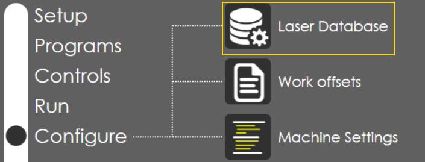
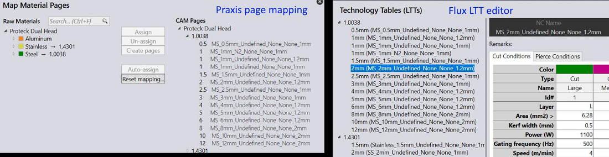
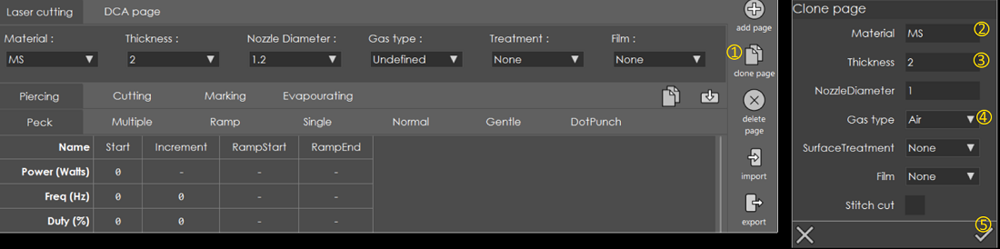
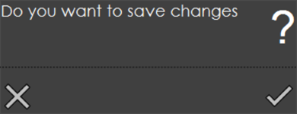
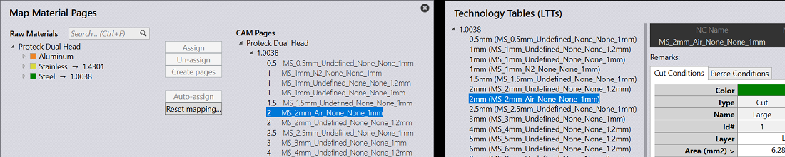

When linked to Praxis, the same LTT is used in Vulcan, Praxis and Flux. Vulcan becomes the LTT master and owns the technology tables. All edits made at Vulcan are pushed to all Praxis + Flux stations on the network.
● Switch to the Configure page and click on the Laser Database button.

● Open Praxis or Flux to confirm the existing laser data.

● In Vulcan select a material + thickness and use clone page to clone the selected page. Here we are going to clone the MS_2mm generic page for Air. Follow the steps displayed in the image below and press OK.

● Press done in laser database page and press OK to save the changes when prompted.

● Open the page lists again in Praxis/Flux. The cloned page should be listed.

Notes